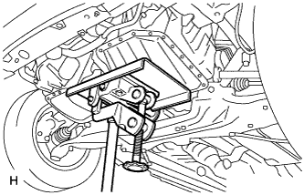
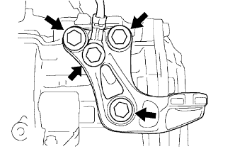
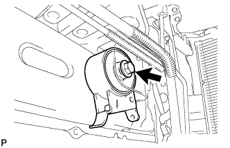

エンジンマウンティング インシュレータ LH（1NZ-FE(4WD)） 取り外し |
| 1. エンジンアンダ カバー LH取りはずし |
ボルト2本およびスクリュ2本をはずし、エンジンアンダカバーLHを取りはずす。
| 2. エンジンマウンティング ブラケット LH取りはずし |
|  |
木片などを介して、トランスミッションジャッキで、オートマチックトランスアクスルを保持する。
 |
ボルト2本をはずし、エンジンをゆっくり下げる。
|  |
アースボルトを取りはずす。
ボルト3本をはずし、エンジンマウンティングインシュレータLHを取りはずす。
| 3. エンジンマウンティング インシュレータ LH取りはずし |
|  |
ボルトをはずし、エンジンマウンティングインシュレータLHを取りはずす。